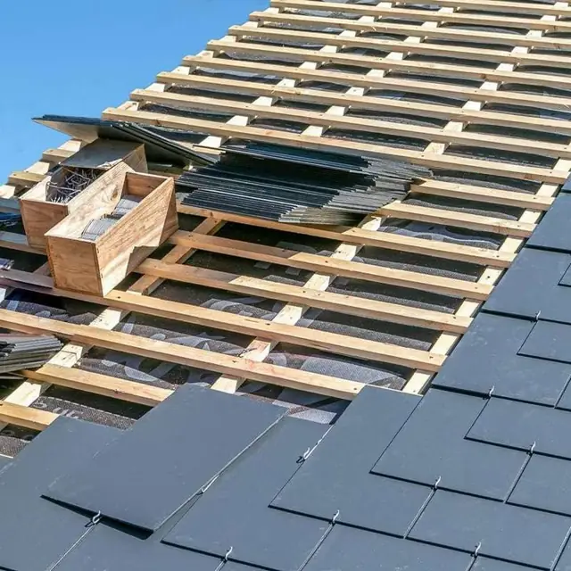
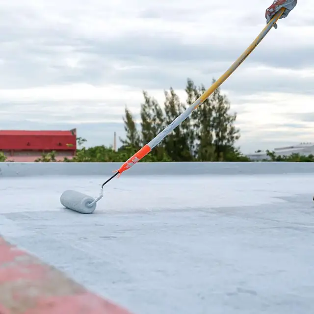
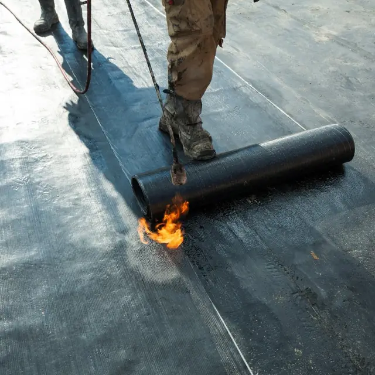
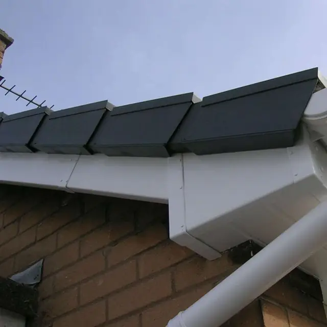
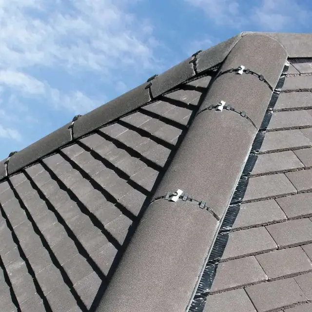

Dublin City & County
Roof repairs in Dublin.
Leaks, slates, flat roofs and full new roofs. Free quotes, fair prices and no job too small.
Prefer to talk? 085 173 8320
Who we are
A reliable team of roofers, anywhere in County Dublin.
Whether you are in the heart of Dublin City or anywhere across the county, we are your local roofing specialists: expert repairs, replacements and maintenance, with fast, friendly and affordable service.
As a small team of expert tradesmen we pride ourselves on a first-class job done in a mature, friendly manner. We keep you informed at every step, and nothing happens on your property without your say-so.
About us Working across County Dublin
Working across County DublinWhat we do
Roofing work we carry out.
A full range of roofing work for homeowners and businesses across Dublin City and the surrounding areas.

Roof Repairs
From a few slipped slates to storm damage, repaired properly and promptly.
View service
New Roof Installation
Re-roofing and new roofs built with strong, long-lasting materials.
View service
Fibreglass Roofing
Seamless GRP roofs for extensions, dormers, garages and sheds.
View service
Flat Roof Repairs
Felt, EPDM rubber and fibreglass flat roofs, repaired or replaced.
View service
Tile & Slate Roofing
Installation, restoration and careful repair of slate and tiled roofs.
View service
Chimney Repairs
Flashing, repointing and brickwork to keep chimneys safe and dry.
View service
Dry Verge Systems
Mortar-free verge caps that protect roof edges from wind and rain.
View service
Dry Ridge Systems
Mechanically fixed ridge tiles that stay put in a storm.
View service
Roof Cleaning
Moss, algae and lichen removed, and kept away for longer.
View serviceThe details matter
Why Dublin homeowners choose us.
Skilled professionals
A dedicated, well-qualified team. From minor repairs to major projects, the workmanship is the same.
Years of experience
Many years in the trade across Dublin, on every common roof type and material.
End-to-end service
One contractor for the whole roof, so you are not chasing different trades for different tasks.
Free online tool
What is your roof doing?
Pick what you are seeing and we will tell you what is likely going on and which job usually sorts it. Then book a free inspection to be sure.
What are you noticing?
Our work
Recent jobs around Dublin.


Our process
Four simple steps, no hassle.
Call or message us
Ring, WhatsApp or send the form and tell us what the roof is doing.
We take a look
We inspect the roof and explain plainly what needs doing, and what does not.
Free, clear quote
A no-obligation price with no hidden fees, before anything starts.
Job done, site tidy
Quality materials, careful work, and we clean up after ourselves.
What our customers say
Trusted by Dublin homeowners.
The best people to speak for our work are the people we have done it for.
Roof Repairs Dublin did an excellent job replacing our roof. They were always on time, fixed any problems that arose in a very timely manner and always tidied up after they left. After spending several weeks researching and finding a roofer, we are very happy with the decision to go with Roof Repairs Dublin.
An excellent job done. All the team from Roof Repairs Dublin were friendly and efficient, I’m very happy with the end result.
Arrived on time. They gave good honest advice on the best options for our roof. All the workmen were friendly and polite, kept the work area clean and tidied everything away after themselves. Would definitely recommend to all my friends and family.
They turned up at 8.30 am as agreed and were extremely tidy, replacing the flat roof on my garage, and came back the following day to fit the vent tiles they recommended. The damp in the loft has already started to clear. Extremely pleased and would highly recommend them.
Areas we cover
Roofers across Dublin City & County.
We cover Dublin City and the whole of County Dublin, including:
- Ballsbridge
- Dalkey
- Malahide
- Howth
- Castleknock
- Sandyford
- Monkstown
- Dublin 3
- Dublin 4
- Dublin 6
- Swords
- Blanchardstown
- Lucan
- Tallaght
- Clondalkin
- Dún Laoghaire
- Blackrock
- Rathfarnham
Are your quotes free?
Yes. Quotes are free and there is no obligation to go ahead.
Is any job too small?
No. We are happy to take on small repairs as well as full new roofs.
What areas do you cover?
Dublin City and the whole of County Dublin, including Swords, Malahide, Howth, Blanchardstown, Lucan, Tallaght, Dalkey and Dún Laoghaire.
Do you work on commercial properties?
Yes. We work for homeowners and businesses.
Should I repair or replace my roof?
We inspect the roof and explain plainly what needs doing. We only recommend a replacement when a repair will not do the job.
Do you do emergency repairs?
Yes. Emergency and storm damage repairs are part of our roof repair service. Ring 085 173 8320.
Free quotes · Guaranteed work
Need roofing work done?
Need a repair, a replacement, or just have a few questions? Whether it is a minor leak or a full new roof, we are here to help.